2º Laboratório de Modelação e Simulação 2019/20
Optimização do servomecanismo de um disco rígido
Alice Rosa, nº 90007
Beatriz Pereira, nº 90029
Grupo 16, Turno 3ª feira às 9h00
Contents
Pergunta 2
Foi criada a seguinte função, "imp_prot", para a geração do impulso protótipo.
type('imp_prot.m');
function p_beta=imp_prot(t,beta) ind= t<=-(beta/2)-(1/2); part0=zeros(1,length(t(ind))); ind= t>-(beta/2)-(1/2) & t<=-(1/2); part1 = (1/2)*(((4/beta^2).*(t(ind)+(1/2))+(2/beta)).*(t(ind)+(1/2)+(beta/2))); ind= t>-(1/2) & t<=(beta/2)-(1/2); part2= 1-((1/2)*((-(4/beta^2).*(t(ind)+(1/2))+(2/beta)).*((beta/2)-(t(ind)+(1/2))))); ind= t>(beta/2)-(1/2) & t<=-(beta/2)+(1/2); part3=ones(1,length(t(ind))); ind= t>-(beta/2)+(1/2) & t<=(1/2); part4= 1-((1/2)*(((4/beta^2).*(t(ind)-(1/2))+(2/beta)).*(t(ind)-(1/2)+(beta/2)))); ind= t>(1/2) & t<=(beta/2)+(1/2); part5=(1/2)*((-(4/beta^2).*(t(ind)-(1/2))+(2/beta)).*((beta/2)-(t(ind)-(1/2)))); ind= t>(beta/2)+(1/2); part6=zeros(1,length(t(ind))); p_beta=[part0 part1 part2 part3 part4 part5 part6]; end
Nesta função, deu-se uso às expressões analíticas deduzidas na alínea 1, obtendo-se para cada intervalo adequado o valor de 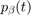. No final, concatenaram-se todas as partes para se obter o impulso protótipo.
clear t=-1:0.01:1; beta_set=[0 0.2 0.7 1]; for i=1:length(beta_set) beta=beta_set(i); pbeta=imp_prot(t,beta); figure(1); plot(t,pbeta); hold on; end xlabel('t [s]'); ylabel('$p_\beta(t)$','interpreter','latex'); title('Impulso Protótipo'); set(gca,'Fontsize',14); lg=legend(sprintf('\\beta=%.1f',beta_set(1)),sprintf('\\beta=%.1f',beta_set(2)),... sprintf('\\beta=%.1f',beta_set(3)),sprintf('\\beta=%.1f',beta_set(4))); set(lg,'Fontsize',10);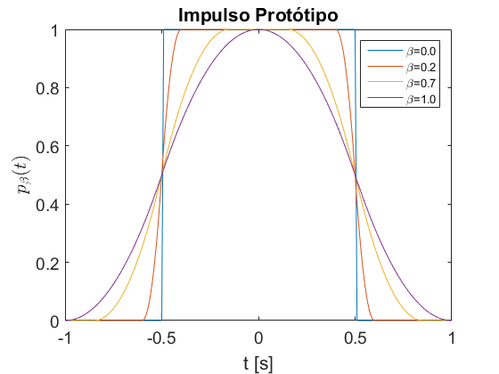
Geraram-se 4 impulsos protótipos, para diferentes 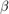, de forma a evidenciar a influência deste na forma do impulso.
Como se pode verificar, o parâmetro influencia a duração total do impulso e a duração dos flancos acendentes e descentes do mesmo.
- Para 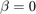, o impulso gerado é rectangular, ou seja, o tempo de descida e subida são nulos.
- Para 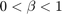, verifica-se o aumento gradual dos tempos de subida e descida com o aumento de .
- Para 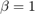, a tempo de subida é igual ao tempo de descida e a soma dos dois corresponde à duração total do impulso.
Pergunta 3
Foi criada a seguinte função, "sinal_entrada", para a geração do sinal de controlo, 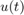.
type('sinal_entrada.m');
function [u,t]=sinal_entrada(T,alpha,beta,U1,U2,n1,n2)
T1=T/(1+alpha);
T2=alpha*T1;
t1=linspace(-(1/2)-(beta/2),(1/2)+(beta/2),n1);
t2=linspace(-(1/2)-(beta/2),(1/2)+(beta/2),n2);
u1=-U1*imp_prot(t1,beta); %Mudar a amplitude do sinal
t_1=(t1*(T1/(1+beta)))+(T1/2); %Expansão e deslocamento do sinal do tempo
u2=U2*imp_prot(t2,beta);
t_2=(t2*(T2/(1+beta))); %Expansão do sinal do tempo
dif=t_1(n1)-t_2(1); %Distância entre o final do 1º impulso e inicio do segundo
t__2=t_2+dif; %Deslocamento do segundo impulso no tempo
u=[u1 u2]; %Concatenação dos dois impulsos
t=[t_1 t__2];
end
Nesta função, realizaram-se transformações na amplitude e no tempo a partir do impulso protótipo. O primeiro impulso é multiplicado pela amplitude U1, expandido no tempo de acordo com o factor 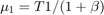 e avançado 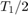. As mesmas transformações de amplitude e de expansão foram realizadas para o segundo impulso com a amplitude U2 e período T2, este foi avançado no tempo de forma ao seu início corresponder ao final do primeiro impulso.
clear close all T=5; alpha_set=[0.5 1 1.5]; beta=0.5; U1=1; U2=1; n1=400; n2=400; for i=1:length(alpha_set) alpha=alpha_set(i); [u,t]=sinal_entrada(T,alpha,beta,U1,U2,n1,n2); figure(1); plot(t,u); hold on; end xlim([t(1) t(length(t))]); xlabel('t [s]'); ylabel('$u(t)$','interpreter','latex'); title('Sinal de Controlo'); set(gca,'Fontsize',14); grid on; legend(sprintf('\\alpha=%.1f',alpha_set(1)),sprintf('\\alpha=%.1f',alpha_set(2)),... sprintf('\\alpha=%.1f',alpha_set(3)),'Location','northwest');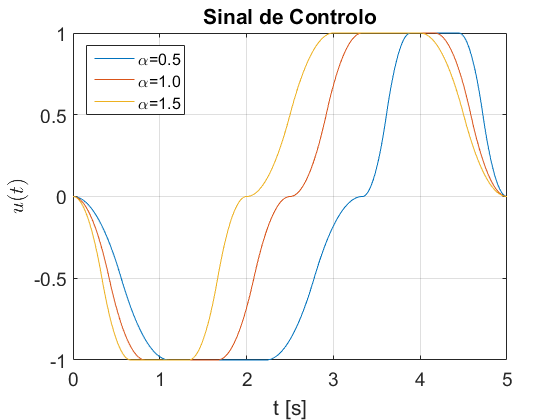
Geraram-se 3 sinais de controlo, para diferentes valores de 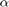, de forma a evidenciar a influência deste na forma do sinal. Como se pode verificar, o parâmetro influencia os parâmetros T1 e T2 do sinal.
- Para 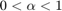, T1>T2, ou seja, a duração do primeiro impulso é superior à do segundo.
- Para 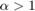, T1<T2.
Pergunta 7
Para esta questão, realizou-se a simulação do sistema em malha aberta, onde, a partir das expressões obtidas na alínea 6, gera-se o sinal de controlo e obtém-se os valores da posição e velocidade da cabeça sobre o disco, resolvendo a seguinte equação diferencial:
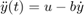
Onde b é uma constante associada a um termo que modela o efeito de atrito.
Para obter os valores da posição e velocidade utilizou-se o seguinte diagrama de blocos desenvolvido no SIMULINK:
open('sim7');
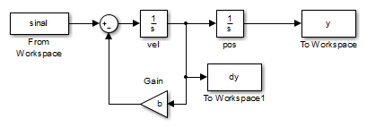 clear close all alpha=[0.5 1 1.5]; beta=[0.5 0.5 0.5]; n1=400; n2=400; y_inicial=1; dy_inicial=0; b=0; for i=1:length(alpha); if alpha(i)>0 && alpha(i)<=1 T=sqrt((2/alpha(i))*(1+beta(i))*(1+alpha(i))); elseif alpha(i)>1 T=sqrt(2*(1+beta(i))*(1+alpha(i))); end T1=T/(1+alpha(i)); U1=(2*(1+beta(i)))/(T1^2*(1+alpha(i))); U2=U1/alpha(i); [u,t]=sinal_entrada(T,alpha(i),beta(i),U1,U2,n1,n2); figure(1); plot(t,u); hold on; sinal.time=t'; sinal.signals.values=u'; sinal.signals.dimensions=1; sim('sim7'); figure(2); plot(tout,dy); hold on; figure(3); plot(tout,y); hold on; figure(4); plot(y,dy); hold on; end figure(1); xlabel('t [s]'); ylabel('$u(t)$','interpreter','latex'); title('Sinais de Controlo'); grid on; set(gca,'fontsize',12); legend(sprintf('\\alpha=%.1f \\beta=%.1f',alpha(1),beta(1)),... sprintf('\\alpha=%.1f \\beta=%.1f',alpha(2),beta(2)),... sprintf('\\alpha=%.1f \\beta=%.1f',alpha(3),beta(3)),'Location','northwest'); figure(2); xlabel('t [s]'); ylabel('$\dot y(t)$','interpreter','latex'); title('Velocidade'); grid on; set(gca,'fontsize',12); legend(sprintf('\\alpha=%.1f \\beta=%.1f',alpha(1),beta(1)),... sprintf('\\alpha=%.1f \\beta=%.1f',alpha(2),beta(2)),... sprintf('\\alpha=%.1f \\beta=%.1f',alpha(3),beta(3)),'Location','southeast'); figure(3); ylim([0 1]); xlabel('t [s]'); ylabel('y(t)'); title('Posição'); grid on; set(gca,'fontsize',12); legend(sprintf('\\alpha=%.1f \\beta=%.1f',alpha(1),beta(1)),... sprintf('\\alpha=%.1f \\beta=%.1f',alpha(2),beta(2)),... sprintf('\\alpha=%.1f \\beta=%.1f',alpha(3),beta(3))); figure(4); xlabel('y(t)'); ylabel('$\dot y(t)$','interpreter','latex'); title('Curvas de Comutação'); grid on; set(gca,'fontsize',12); legend(sprintf('\\alpha=%.1f \\beta=%.1f',alpha(1),beta(1)),... sprintf('\\alpha=%.1f \\beta=%.1f',alpha(2),beta(2)),... sprintf('\\alpha=%.1f \\beta=%.1f',alpha(3),beta(3)));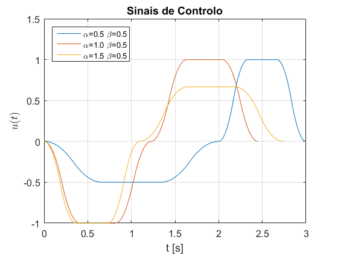 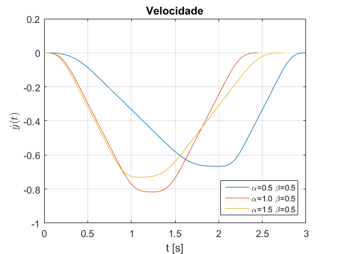 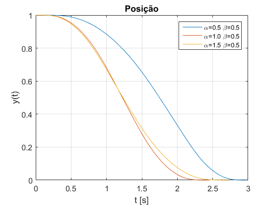 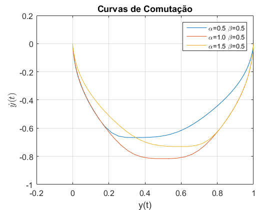
Na figura 1, podemos observar os sinais de controlo obtidos a partir dos parâmetros deduzidos, tendo em atenção que T(=0.5)= 3 s, T(=1)= 2.7 e T(=1.5)=2.48 s, aproximadamente.
A partir das figuras 2,3 e 4, verificámos a validade das expressões analíticas obtidas na alínea 6, uma vez que para os 3 pares de 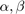 obtemos as configurações finais desejadas, y(T)=0 e 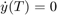.
Também podemos verificar que, tal como foi deduzido, o valor de que minimiza T é 1.
De seguida, obtém-se os mesmos gráficos, mas agora com o sistema perturbado com b=0.025.
close all b=0.025; for i=1:length(alpha); if alpha(i)>0 && alpha(i)<=1 T=sqrt((2/alpha(i))*(1+beta(i))*(1+alpha(i))); elseif alpha(i)>1 T=sqrt(2*(1+beta(i))*(1+alpha(i))); end T1=T/(1+alpha(i)); U1=(2*(1+beta(i)))/(T1^2*(1+alpha(i))); U2=U1/alpha(i); [u,t]=sinal_entrada(T,alpha(i),beta(i),U1,U2,n1,n2); sinal.time=t'; sinal.signals.values=u'; sinal.signals.dimensions=1; sim('sim7'); figure(1); plot(tout,dy); hold on; figure(2); plot(tout,y); hold on; figure(3); plot(y,dy); hold on; end figure(1); xlabel('t [s]'); ylabel('$\dot y(t)$','interpreter','latex'); title('Velocidade'); grid on; set(gca,'fontsize',12); legend(sprintf('\\alpha=%.1f \\beta=%.1f',alpha(1),beta(1)),... sprintf('\\alpha=%.1f \\beta=%.1f',alpha(2),beta(2)),... sprintf('\\alpha=%.1f \\beta=%.1f',alpha(3),beta(3)),'Location','southeast'); figure(2); ylim([0 1]); xlabel('t [s]'); ylabel('y(t)'); title('Posição'); grid on; set(gca,'fontsize',12); legend(sprintf('\\alpha=%.1f \\beta=%.1f',alpha(1),beta(1)),... sprintf('\\alpha=%.1f \\beta=%.1f',alpha(2),beta(2)),... sprintf('\\alpha=%.1f \\beta=%.1f',alpha(3),beta(3))); figure(3); xlabel('y(t)'); ylabel('$\dot y(t)$','interpreter','latex'); title('Curvas de Comutação'); grid on; set(gca,'fontsize',12); legend(sprintf('\\alpha=%.1f \\beta=%.1f',alpha(1),beta(1)),... sprintf('\\alpha=%.1f \\beta=%.1f',alpha(2),beta(2)),... sprintf('\\alpha=%.1f \\beta=%.1f',alpha(3),beta(3)));
 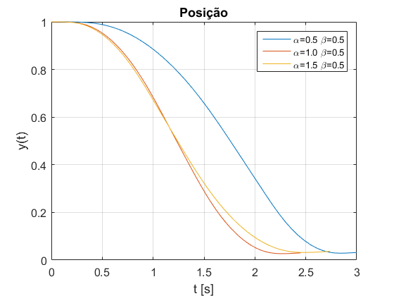 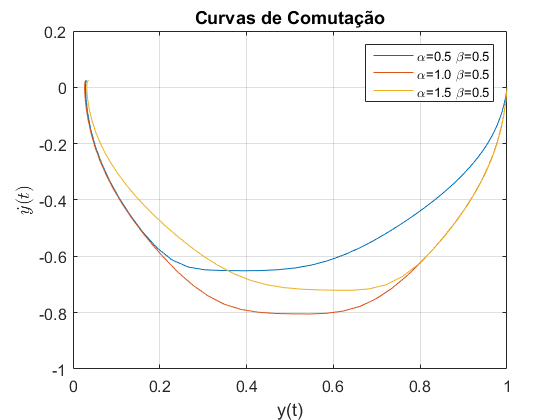
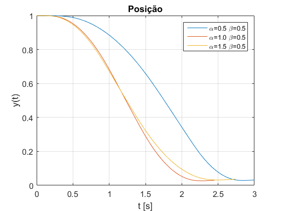 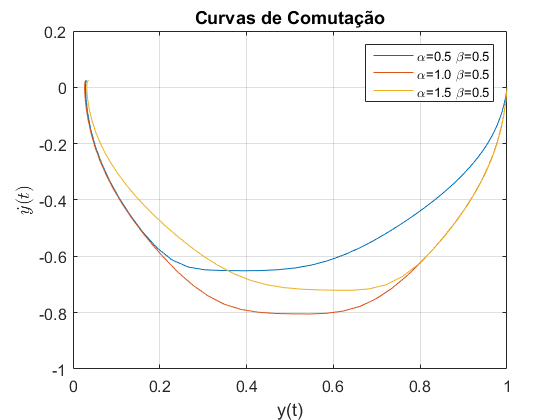 Nesta situação, verifica-se que o estudo feito teoricamente já não é válido. O sistema não é conduzido para a configuração final desejada, visto que 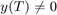 e 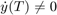. Desta forma, como se pode observar nas figuras da posição e velocidade, a cabeça magnética permanece em movimento, sem atingir o equílibrio.
Pode-se concluir que o sistema em malha aberta é bastante sensível a perturbações. Para contornar este problema recorre-se a um sistema em malha fechada, pois este altera o sinal de controlo tendo em conta a evolução do sistema.
Pergunta 8
clear close all y=-1:0.05:1; dy=-1:0.05:1; for i=1:length(y) for j=1:length(dy) u(i,j)=sign(sign(-y(i))*sqrt(2*abs(-y(i)))-dy(j)); end end pcolor(y,dy,u); title('Mapa de cores da Função de Geração da Entrada'); ylabel('$\dot y(t)$','interpreter','latex'); xlabel('y(t)'); set(gca,'fontsize',12) colorbar;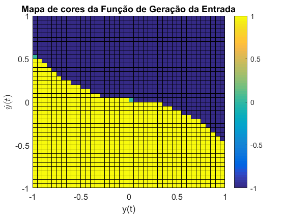
Nesta questão, representou-se a tensão, u, em função da posição e velocidade do sistema. Para este efeito utilizou-se a expressão:
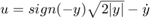
A partir do gráfico obtido, podemos concluir que, como neste caso a nossa referência é 0, o sistema vai evoluir sempre para a origem. Relativamente ao funcionamento global da estrutura de controlo:
- Quando y>0 e 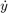>0, para que a cabeça magnética convirja para a origem é necessário que a velocidade diminua, logo u=-1.
- Quando y<0 e <0, para que a velocidade diminua em módulo é necessário que u=1.
- Quando y<0 e >0 ou y<0 e >0, quanto mais afastada estiver a cabeça da origem, para pequenos valores de velocidade não se consegue atingir a mesma, logo é necessário aumentar a velocidade em módulo. De seguida, quando a cabeça se encontra mais próxima da origem, começa-se a diminuir a velocidade, de forma a chegar à posição de referência com velocidade 0.
Pergunta 9
Para esta questão foi realizado o diagrama de blocos da fig.4(b) do enunciado no SIMULINK.
open('sim8'); open_system('sim8/Subsystem','window');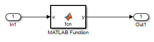
A função inserida no Subsystem foi a seguinte:
function y = fcn(u)
y=sign(u)*sqrt(2*abs(u));
end
clear close all dy_inicial=0; %condições iniciais y_inicial=1; K=10000; %Ganho sim('sim8'); plot(y,dy); ylabel('$\dot y(t)$','interpreter','latex'); xlabel('y(t)'); title('Curva de Comutação'); grid on; set(gca,'Fontsize',12); figure; plot(t,u); xlabel('t [s]'); ylabel('u(t)'); title('Sinal u(t)'); grid on; set(gca,'Fontsize',12); figure; plot(t,dy); xlabel('t [s]'); ylabel('$\dot y(t)$','interpreter','latex'); title('Velocidade em função do tempo'); grid on; set(gca,'Fontsize',12); figure; plot(t,y); xlabel('t [s]'); ylabel('y(t)'); title('Posição em função do tempo'); grid on; set(gca,'Fontsize',12);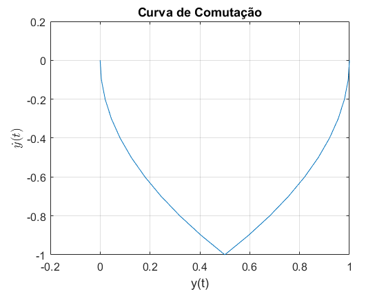 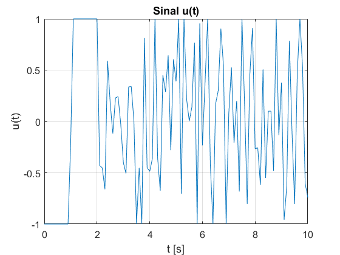 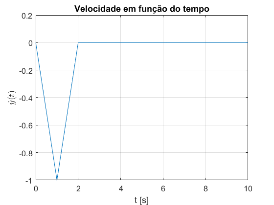 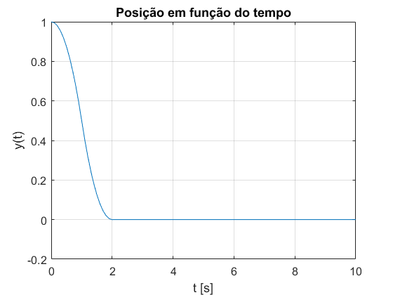
Tanto a estratégia em malha aberta como em malha fechada são válidas, pois ambas conduzem a cabeça magnética para a posição desejada em tempo finito. No entanto, na estratégia em malha fechada, o sistema é mais rápido a atingir esta posição.
Como podemos verificar pelo gráfico obtido na questão 8, a origem está em cima da linha de descontinuidade do sinal de controlo u. Desta forma, o sinal não estabiliza e fica a variar entre 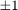.
Este comportamento, conhecido por chattering, é problemático, uma vez que se o sinal de controlo não estabiliza então o sistema também não estabiliza, mantendo-se à volta da origem.
Pergunta 10
Foi criada a seguinte função, "u_valor", para a geração do sinal de controlo, 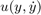, tendo em conta a região a tracejado no diagrama de blocos da figura 5 do enunciado.
type('u_valor.m');
function u=u_valor(y,dy,yl)
k1=1/yl;
k2=sqrt(2*k1);
if abs(-y)<=yl
f=(k1/k2)*(-y);
elseif abs(-y)>yl
f=sign(-y)*(sqrt(2*abs(-y))-(1/k2));
end
u=sign(f-dy);
end
clear close all y=-1:0.05:1; dy=-1:0.05:1; yl=0.05; for i=1:length(y) for j=1:length(dy) u(i,j)=u_valor(y(i),dy(j),yl); end end pcolor(y,dy,u); title('Mapa de cores da Função de Geração da Entrada'); ylabel('$\dot y(t)$','interpreter','latex','Fontsize',14); xlabel('y(t)','Fontsize',14); colorbar;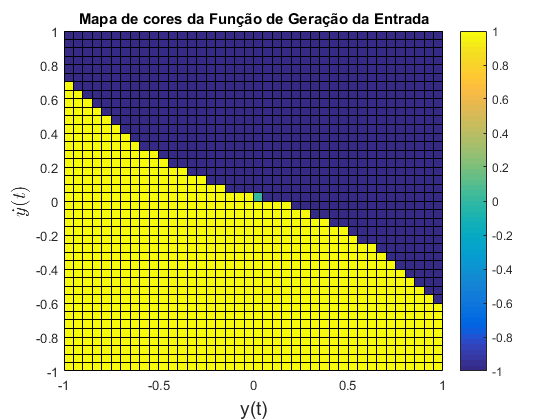
A arquitetura modificada da figura 5 do enunciado permite, ao contrário da anterior, que o sinal de controlo tome valores diferentes de em torno da origem. Este efeito deve-se à definição de um intervalo entre 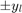, onde o sistema é linear e ao ajuste do ganho para 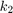.
Desta forma, quando a posição da cabeça magnética se encontra na vizinhança da origem, u(t) converge para um valor fixo, evitando o efeito de chattering.
Pergunta 11
Para esta questão foi realizado o diagrama de blocos da fig.5 do enunciado no SIMULINK.
open('sim10'); open_system('sim10/Subsystem','window');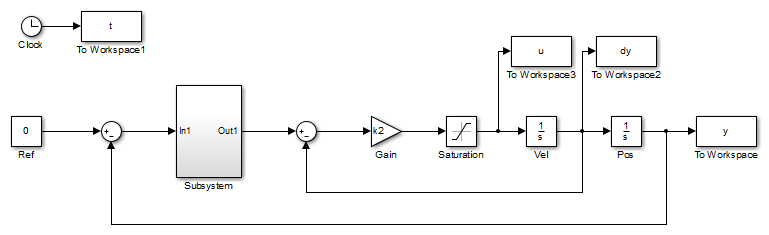 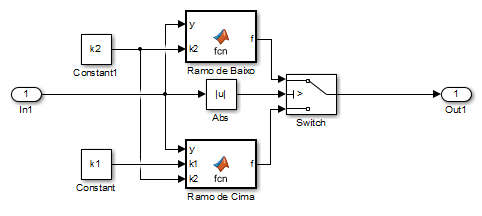
Para o bloco 'Ramo de baixo' inseriu-se a função:
function f = fcn(y,k2)
f=sign(y)*(sqrt(2*abs(y))-(1/k2));
end
Para o bloco 'Ramo de cima' inseriu-se a função:
function f = fcn(y,k1,k2)
f=(k1/k2)*(y);
end
Para o ficheiro Simulink 'sim10_rs', apenas se alterou o Subsystem. Neste só se manteve o bloco 'Ramo de cima', com a função já indicada.
open('sim10_rs');
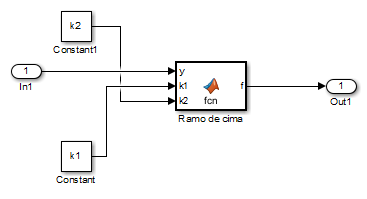 clear close all dy_inicial=0; y_inicial=1; yl=0.05; k1=1/yl; k2=sqrt(2*k1); K=10000; sim('sim8'); figure(1); plot(y,dy); ylabel('$\dot y(t)$','interpreter','latex'); xlabel('y(t)'); title('Curva de Comutação'); grid on; set(gca,'Fontsize',14); hold on; figure(2); plot(t,u); xlabel('t [s]'); ylabel('u(t)'); title('Sinal u(t)'); grid on; set(gca,'Fontsize',14); xlim([0 8]); hold on; figure(3); plot(t,dy); xlabel('t [s]'); ylabel('$\dot y(t)$','interpreter','latex'); title('Velocidade em função do tempo'); grid on; set(gca,'Fontsize',14); xlim([0 8]); hold on; figure(4); plot(t,y); xlabel('t [s]'); ylabel('y(t)'); title('Posição em função do tempo'); grid on; set(gca,'Fontsize',14); xlim([0 8]); hold on; sim('sim10'); figure(1); plot(y,dy); hold on; figure(2); plot(t,u); hold on; figure(3); plot(t,dy); hold on; figure(4); plot(t,y); hold on; sim('sim10_rs'); figure(1); plot(y,dy); lg=legend('Com chattering','Sem chattering','Ramo superior'); set(lg,'Fontsize',12); figure(2); plot(t,u); lg=legend('Com chattering','Sem chattering','Ramo superior'); set(lg,'Fontsize',12); figure(3); plot(t,dy); lg=legend('Com chattering','Sem chattering','Ramo superior','Location','southeast'); set(lg,'Fontsize',12); figure(4); plot(t,y); lg=legend('Com chattering','Sem chattering','Ramo superior'); set(lg,'Fontsize',12);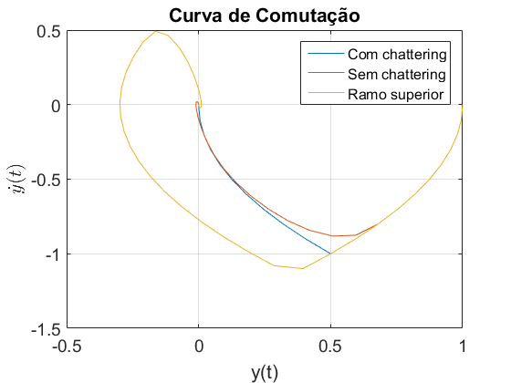 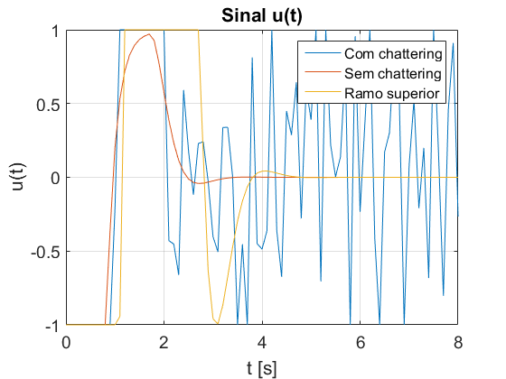 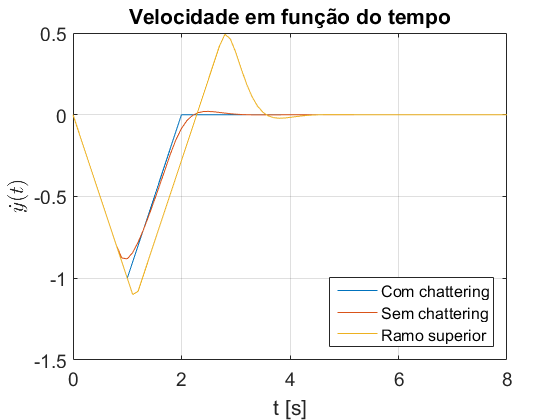 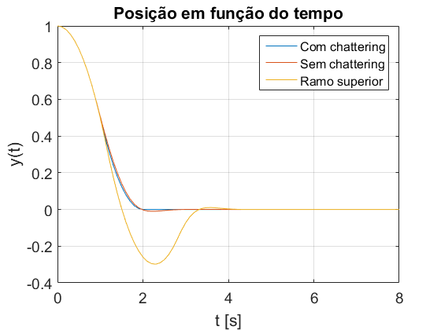
Como se pode verificar pelos gráficos obtidos, o sinal de controlo da arquitetura modificada não apresenta oscilações, como pretendido. Neste caso, quando a posição da cabeça se encontra na vizinhança da origem, o sinal u(t) converge para 0. Também se observa uma evolução do sistema mais suave comparativamente ao sistema da questão anterior. No entanto, a arquitectura anterior é ligeiramente mais rápida a atingir a posição final pretendida.
Comparando ainda com a resposta do sistema em apenas se considera o ramo superior da função f(x), podemos concluir que, apesar de também não haver chattering, a degradação no tempo de resposta é bastante superior comparativamente às duas estruturas simuladas.
Daqui, retira-se que a melhor estrutura a utilizar é a apresentada na figura 5, pois evita o efeito de chattering e tem um tempo de resposta aceitável.
Pergunta 12
Para esta questão foi realizado o diagrama de blocos da fig.5 do enunciado, juntamente com a constante b que modela o efeito de atrito no SIMULINK. O bloco Subsystem é igual ao do ficheiro 'sim10', já apresentado.
open('sim12'); open_system('sim12/Subsystem','window');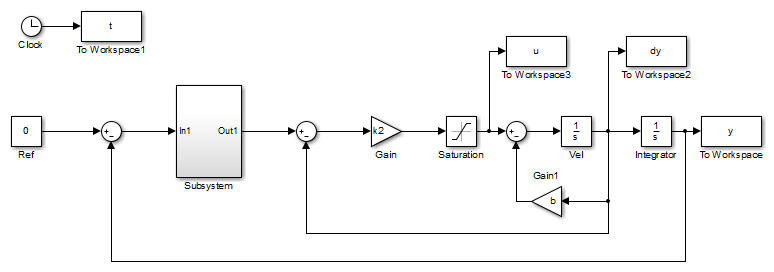 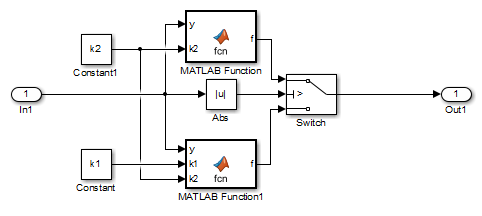
clear close all dy_inicial=0; y_inicial=1; yl=0.1; k1=1/yl; k2=sqrt(2*k1); b=0.025; n1=400; n2=400; sim('sim12'); figure(1); plot(y,dy); ylabel('$\dot y(t)$','interpreter','latex'); xlabel('y(t)'); title('Curva de Comutação'); grid on; set(gca,'Fontsize',12); hold on; figure(2); plot(t,u); xlabel('t [s]'); ylabel('u(t)'); title('Sinal u(t)'); grid on; set(gca,'Fontsize',12); xlim([0 8]); hold on; figure(3); plot(t,dy); xlabel('t [s]'); ylabel('$\dot y(t)$','interpreter','latex'); title('Velocidade em função do tempo'); grid on; set(gca,'Fontsize',12); xlim([0 8]); hold on; figure(4); plot(t,y); xlabel('t [s]'); ylabel('y(t)'); title('Posição em função do tempo'); grid on; set(gca,'Fontsize',12); xlim([0 8]); hold on;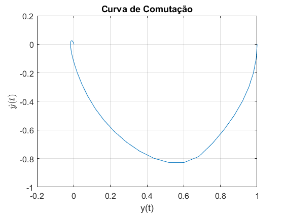 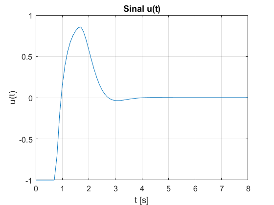 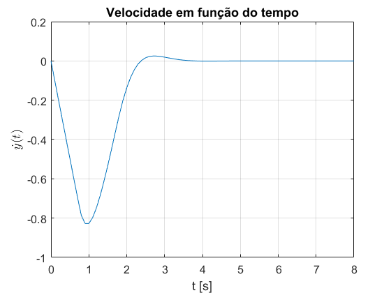
Na questão 7, verificou-se que para a configuração em cadeia aberta, uma pequena perturbação conduzia o sistema para uma configuração final diferente da desejada. No caso da configuração em cadeia fechada, tal não se verifica. Mesmo com a presença de atrito, a posição e a velocidade finais da cabeça são as pretendidas.
Podemos concluir que a configuração em malha fechada apresenta uma maior robustez relativamente à de malha aberta, ou seja, tem uma maior capacidade de rejeitar perturbações aplicadas no sistema.
Pergunta 13
Simulou-se a arquitectura da figura 5, aplicando à entrada uma referência de sinais constantes, a partir da soma de "Steps" com diferentes amplitudes.
open('sim13_constantes'); open_system('sim13_constantes/Subsystem','window');

Aplicou-se à entrada "Ref" sequências de rampas, a partir do bloco "Repeting sequence" do SIMULINK.
open('sim13_rampas'); open_system('sim13_rampas/Subsystem','window');
Os blocos Subsystem de ambos os ficheiros, apresentam o mesmo conteúdo do bloco Subsystem do ficheiro 'sim10' já apresentado.
clear close all dy_inicial=0; y_inicial=1; yl=0.1; k1=1/yl; k2=sqrt(2*k1); sim('sim13_constantes'); plot(tout,const,t,y); xlabel('t [s]'); ylabel('y'); title('Sinais constantes - Posição'); grid on; set(gca,'Fontsize',12); legend('Ref','y(t)','Location','northwest'); t_rampa=10; %duração de cada impulso tt=30; %tempo de simulação total sim('sim13_rampas'); figure(2); plot(tout,rampa,t,y); xlabel('t [s]'); ylabel('y'); title('Sequências de Rampas - Posição'); grid on; set(gca,'Fontsize',12); legend('Ref','y(t)','Location','northwest'); t_rampa=2; tt=10; sim('sim13_rampas'); figure(3); plot(tout,rampa,t,y); xlabel('t [s]'); ylabel('y'); title('Sequências de Rampas (com menor tempo entre rampas)'); grid on; set(gca,'Fontsize',12); legend('Ref','y(t)','Location','northwest');
Para a figura 1 e 2 verifica-se uma boa fidelidade do seguimento da referência por parte do sistema, uma vez que se dá tempo suficiente ao sistema para mudar de posição e estabilizar.
No caso da figura 3, onde se diminui o período do sinal, a mudança da referência é demasiado brusca para o sistema a conseguir acompanhar.
Apesar desta sensibilidade, podemos concluir que o sistema da figura 5 é a melhor opção de controlo do sistema.